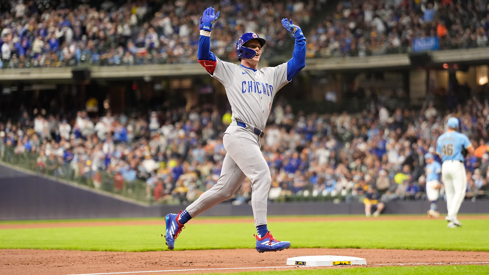
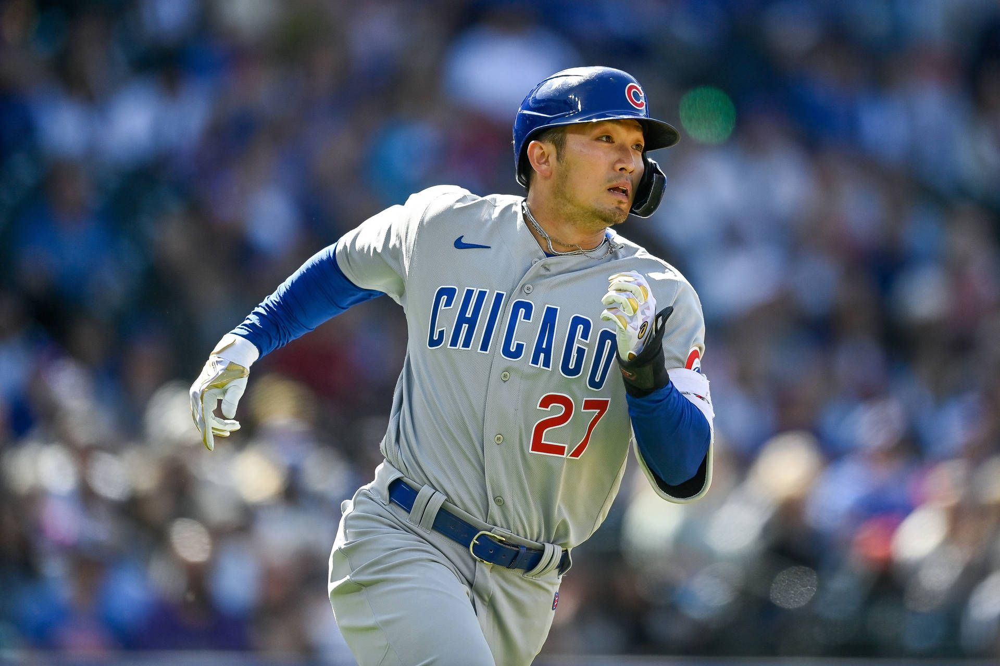
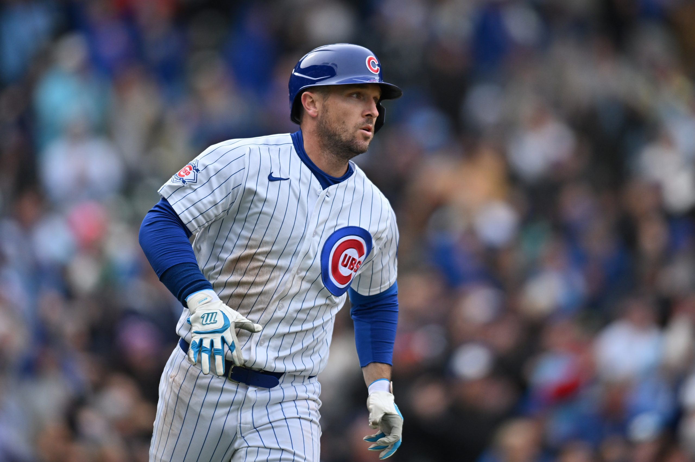

Pete Crow-Armstrong
Known for his powerful hitting, elite defense, and exceptional speed.
In the 2025-2026 season, he has been a key contributor to the Cubs' success.
This season, he has hit .270 with 45 homeruns, 107 RBIs, and 38 stolen bases.
His 45 homerun mark has set a new record for the most homeruns
hit by a left-handed Cubs player in a single season. Furthermore, he
is only two steals away from being the only Cub all-time to have a 40/40 season.

Seiya Suzuki
Known for his powerful swing and patient approach at the plate, Seiya Suzuki has
been an important contributor to the Cubs' offense during the 2026 season. Through
September 20, he is batting .267 with 25 home runs, 85 RBIs, and 93 runs scored.
He has also collected 30 doubles and drawn 78 walks, contributing to an impressive
.835 OPS. His combination of power and ability to get on base gives the Cubs a dangerous
presence in the lineup.

Alex Bregman
Alex Bregman brings power and a disciplined approach to the Cubs' lineup. Through September 20
of the 2026 season, he is batting .262 with 26 home runs, 89 RBIs, and 89 runs scored. He has
also recorded 32 doubles and drawn 75 walks, posting a .352 on-base percentage and an .804 OPS.
His ability to produce extra-base hits while working tough at-bats makes him a valuable part of
Chicago's offense.